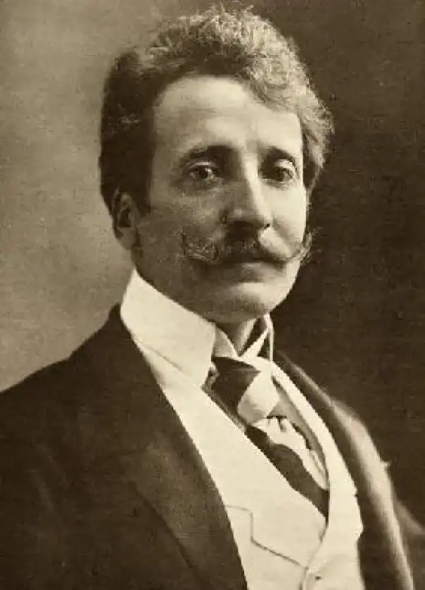

LARTISTE
LARTISTE
LARTISTE
LARTISTE
Brendekilde a grandi à Braendekilde, un petit village près d' Odense sur l'île de Funen .
Il était un parent éloigné de Hans Christian Andersen , le célèbre écrivain de contes de fées, et comme son parent il a eu une enfance très pauvre.
Les pères des deux étaient sabotiers. À l'âge de 4 ans, Brendekilde a quitté ses parents et a vécu avec ses grands-parents jusqu'à l'âge de 10 ans lorsqu'il a gagné sa vie en tant que berger, obtenant le gîte et le couvert.
À l'école, un enseignant a découvert sa capacité à sculpter des animaux dans le bois et de 1871 à 1874, il a été apprenti chez le sculpteur sur bois et tailleur de pierre Wilhelm Hansen à Odense.
En 1877, il a été formé comme peintre de fleurs par OA Hermansen et la même année, il a été admis auAcadémie royale des beaux-arts du Danemark à Copenhague .